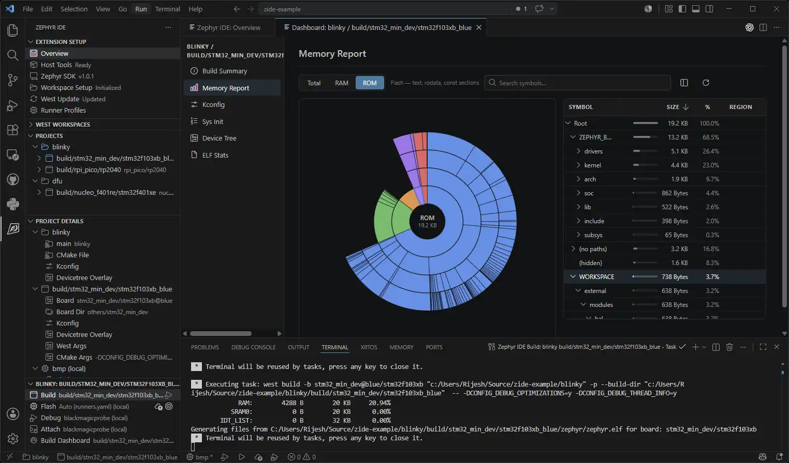
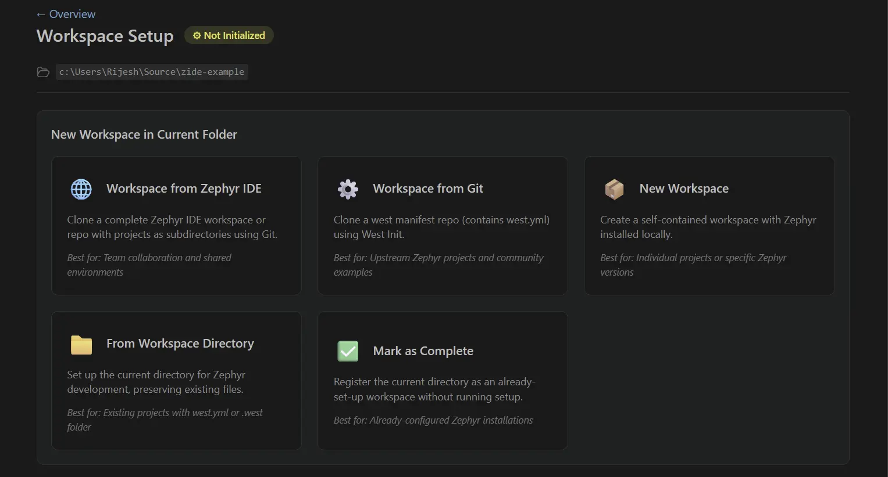

IDE for Zephyr（VS Code 扩展）
IDE for Zephyr 是 Mylonics 推出的一款用于 Zephyr RTOS 开发的 Visual Studio Code（VS Code）扩展。它支持 主机工具管理、west 工作区设置、SDK 管理、项目创建、构建/烧录 和 调试。

主要特性
通过内置的
zephyr-ide-cortex和zephyr-ide-west调试器类型与 Cortex-Debug 集成，支持 ST-Link、J-Link、OpenOCD、Black Magic Probe 及其他探针，并自动解析 ELF、GDB 和运行器路径与 clangd 或 C/C++ 扩展集成以提供 IntelliSense
在构建仪表板（Build Dashboard）中查看内存使用、Kconfig 和设备树；无需离开 VS Code 即可以旭日图形式查看 ROM 和 RAM
使用内置编辑器交互式地编辑 Kconfig 选项
在项目面板中添加、运行和重新配置 Twister 测试
在 Linux、macOS 和 Windows 上自动安装原生主机工具（CMake、Python 3、Ninja、DTC、GCC 等）
安装和管理 Zephyr SDK 版本以及各架构的工具链
从现有应用程序或 Zephyr 示例添加项目，支持多个构建，并可按构建覆盖开发板和配置
将项目配置存储在可纳入版本控制的
.vscode/zephyr-ide.json中，其中可以指定 SDK、软件包和二进制大对象
兼容性
Windows
Linux
macOS
入门
安装扩展
从 VS Code Marketplace 或 Open VSX Registry 安装 IDE for Zephyr。
VS Code Marketplace (Extension Pack) 和 Open VSX Registry (Extension Pack) 上还提供一个扩展包，捆绑了 Cortex-Debug、C/C++、Serial Monitor、Devicetree LSP 和 CMake 支持。
打开概览页面并安装主机工具
点击 Host Tools 卡片。扩展会检查所需的构建依赖（CMake、Python 3、Ninja、DTC、GCC 等）是否在 PATH 中，并可以自动安装缺失的工具。
配置 West 工作区
点击 Workspace 卡片并选择一种设置方式：
IDE for Zephyr Workspace from Git：克隆一个已包含预先配置好的 IDE for Zephyr 工作区的仓库。
West Workspace from Git：克隆一个现有的、基于 west 的 Zephyr 仓库。
Standard Workspace：创建一个全新的工作区，包括 Python 虚拟环境、west 安装以及 Zephyr 仓库初始化。
Open Current Directory：使用现有的
.west文件夹，或通过ZEPHYR_BASE链接到外部的 Zephyr 安装。
如有需要，此步骤还会提示你安装 Zephyr SDK。之后可以在概览页面的 Zephyr SDK 卡片中管理 SDK。

添加项目和构建
在 Project 面板中，点击 Add Project 添加现有应用程序，或复制一个 Zephyr 示例作为起点。
添加项目后，点击 Add Build 创建构建配置。选择目标开发板，并可选择一个运行器配置文件。每个项目可以有多个面向不同开发板或配置的构建。
构建并烧录应用程序
使用状态栏按钮或 Project Build 面板进行构建、烧录或执行全新（pristine）构建。构建输出显示在集成终端中。
配置并运行调试会话
IDE for Zephyr 自带一个内置的
zephyr-ide-west调试器类型，它会读取当前构建的runners.yaml，并自动将其转换为 Cortex-Debug 会话。入门时不需要.vscode/launch.json条目。zephyr-ide-west提供程序接受你会传给west debugserver的参数，而zephyr-ide-cortex提供程序直接接受你会传给cortex-debug的参数。你也可以设置自己的启动配置并将其绑定到某个构建。该扩展提供了一些可在启动时解析的命令。要手动添加启动配置，请使用以下最简形式：
{ "name": "Zephyr IDE: Debug", "type": "zephyr-ide-west", "request": "launch" }
内置提供程序会从
runners.yaml中选择运行器，解析 ELF 和 GDB 路径，并将会话转交给 Cortex-Debug。